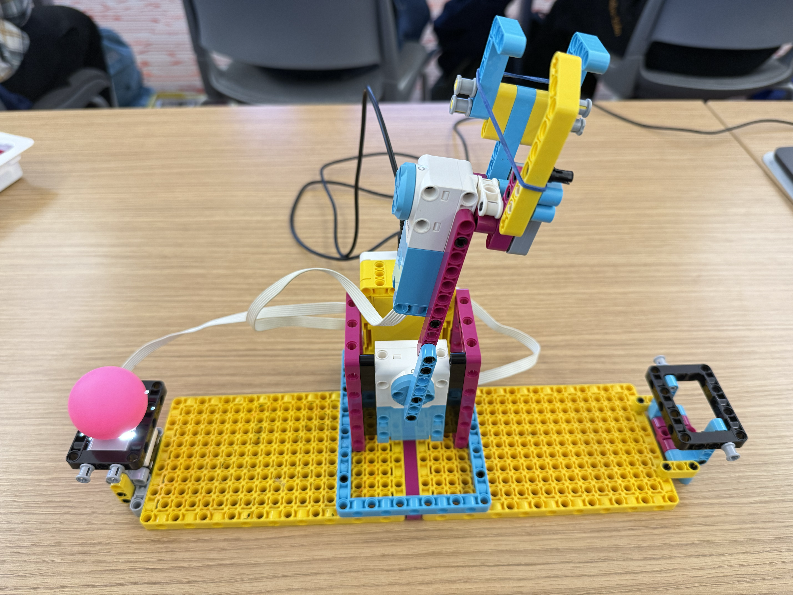

When the color sensor detects any color, the claw opens, moves toward the ball, and then closes to grab it. The rubber band around the claw holds on to the ball as the claw moves toward the end. In the end, the claw opens up and returns to its resting position.